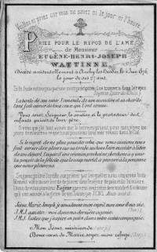

Eugène Henri Joseph WATTINNE — Né le 04/06/1849 à Roubaix — Décédé le 04/06/1876 à Le Parcq
Eugène Henri Joseph WATTINNE
Né le 04/06/1849 à Roubaix
Décédé le 04/06/1876 à Le Parcq
Résumé
Eugène Henri Joseph Wattinne naît le 4 juin 1849 à Roubaix, fils de Louis Joseph Wattinne et de Pauline Catherine Bossut. Il grandit au cœur de l'une des familles industrielles les plus puissantes du Nord : son père, fondateur de la maison Wattinne-Bossut, a acquis en 1859 la filature d'Auchy-lès-Hesdin — installée dans les bâtiments d'une abbaye bénédictine du XIe siècle, créée en 1805 — et en a progressivement pris le contrôle exclusif, rachetant les parts de ses associés Droulers et Prouvost pour en faire, à partir de 1870, la filature Wattinne-Bossut. Par sa mère Pauline Bossut, Eugène est le neveu d'Adèle Bossut, épouse de Louis Motte-Bossut, fondateur de la Filature Monstre de Roubaix.
Eugène s'installe à Auchy-lès-Hesdin pour y diriger la filature familiale. C'est là qu'il épouse Sabine Vandame (1851–1939), fille d'une famille lilloise, avec qui il a un fils, Eugène Joseph Gustave (né vers 1875). Il meurt le 4 juin 1876 — le jour même de son 27e anniversaire — des suites d'un accident de cheval à Auchy-lès-Hesdin, selon le témoignage direct de sa petite-fille Agnès Wattinne. Sa mort brutale et prématurée prive la famille d'un successeur qui se trouvait en pleine prise en main de l'exploitation. Sa veuve Sabine Vandame lui survit plus de soixante ans, décédant à Bernay en 1939.
La filature d'Auchy-lès-Hesdin continuera d'être administrée par la famille pendant encore plus d'un siècle. La famille Wattinne-Bossut y fera agrandir les bâtiments industriels en 1881, 1902 et 1939, et y construira de nombreux équipements sociaux — asile de nourrissons, hospice pour les vieux ouvriers, maison de jeunes filles, cités ouvrières — faisant du bourg une véritable cité paternaliste. La filature, devenue Filauchy, fermera en juin 1989, cent trente ans après l'acquisition par la famille. Le fils d'Eugène, Eugène Joseph Gustave Wattinne, est le père d'Agnès Wattinne, qui épousera Claude Saint-Léger en 1923.
Sources :
- données familiales (gedcom)
- témoignage d'Agnès Wattinne
- FranceArchives, fonds Filauchy
{kind=link}

📷 Cliquez pour voir 1 photo(s)